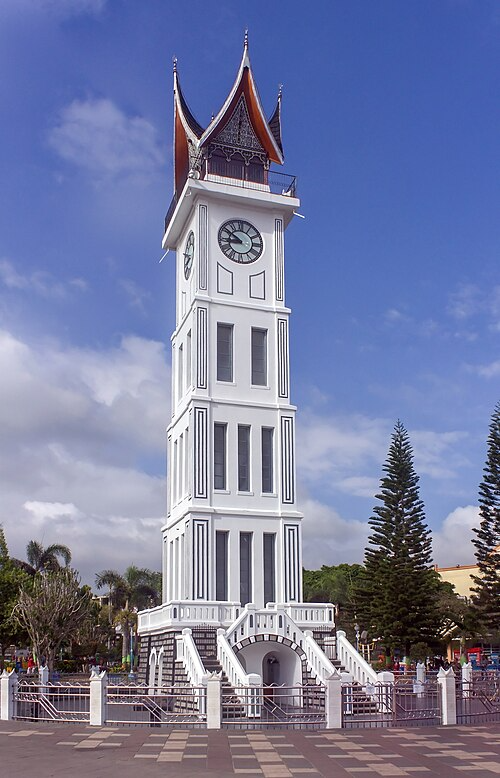

Kota Bukittinggi dan Jam Gadang adalah dua entitas yang sangat terkait dan menjadi simbol utama pariwisata serta sejarah di Provinsi Sumatera Barat, Indonesia. Jam Gadang bukan hanya sekadar monumen, tetapi adalah penanda identitas yang terletak di jantung kota Bukittinggi.
- Kota Bukittinggi: Jantung Dataran Tinggi Minangkabau
- Lokasi dan Geografis
- Sejarah dan Perjuangan
- Perekonomian dan Pariwisata
Pusat Niaga: Terutama di area Pasar Atas dan Pasar Bawah.
Objek Wisata Alam dan Sejarah: Selain Jam Gadang, terdapat Ngarai Sianok, Lobang Jepang (terowongan pertahanan masa Perang Dunia II), dan Kebun Binatang (Taman Marga Satwa dan Budaya Kinantan).
- Jam Gadang: Menara Kembar Big Ben dengan Atap Gonjong
- Arsitektur dan Sejarah Pembangunan
Pembangunan: Jam Gadang didirikan pada tahun 1926-1927 pada masa pemerintahan Hindia Belanda sebagai hadiah dari Ratu Belanda, Wilhelmina, kepada Sekretaris Kota Fort de Kock (Bukittinggi), Hendrik Roelof Rookmaaker.
Teknik Unik: Konon, bangunan ini dibangun tanpa menggunakan campuran semen dan besi penyangga. Bahan perekat yang digunakan adalah campuran pasir putih, batu bata, kapur putih, dan bahkan putih telur, sebuah teknik bangunan tradisional yang kuat.
Mesin: Mesin jam yang digunakan adalah buatan Vortmann Recklinghausen dari Jerman, yang terkenal karena merupakan salah satu dari hanya dua unit di dunia yang dibuat untuk menara jam besar; unit lainnya dipercaya digunakan untuk menara Big Ben di London, Inggris.
- Keunikan Arsitektural
Angka Romawi yang "Aneh": Pada keempat sisi jamnya, angka Romawi untuk bilangan empat ditulis secara tidak lazim sebagai IIII, bukan IV. Ini menjadi salah satu daya tarik dan misteri yang sering dibahas oleh wisatawan.
Perubahan Atap: Jam Gadang telah mengalami tiga kali perubahan bentuk atap seiring dengan pergantian kekuasaan:
Awal (Belanda): Bentuk kubah kerucut dengan patung ayam jantan di puncaknya.
Masa Jepang: Berubah menyerupai pagoda atau kuil khas Jepang.
Masa Kemerdekaan: Diubah menjadi bentuk Gonjong (atap melengkung runcing) yang menyerupai atap Rumah Gadang, rumah adat Minangkabau. Bentuk inilah yang bertahan hingga saat ini, melambangkan identitas budaya lokal.
- Fungsi dan Peran Saat Ini
Landmark dan Objek Wisata: Menjadi pusat perhatian bagi wisatawan domestik maupun mancanegara.
Pusat Interaksi Publik: Taman di sekitar Jam Gadang (Taman Sabai Nan Aluih) menjadi alun-alun kota, tempat masyarakat berkumpul, berinteraksi, dan mengadakan berbagai acara publik
Bukittinggi, yang berarti "bukit tinggi," adalah kota yang terletak di dataran tinggi Pegunungan Bukit Barisan. Kota ini dikelilingi oleh dua gunung berapi yang megah, yaitu Gunung Singgalang dan Gunung Marapi, serta berada di tepi jurang alam yang dramatis, Ngarai Sianok
Kota ini berada sekitar 90 km di utara Kota Padang. Ketinggiannya membuat Bukittinggi memiliki udara yang sejuk dan asri, menjadikannya destinasi favorit sejak masa kolonial.
Pada masa kolonial Belanda, kota ini dikenal sebagai Fort de Kock, diambil dari nama benteng pertahanan Belanda yang kini menjadi objek wisata (Taman Marga Satwa dan Budaya Kinantan). Namun, peran paling penting Bukittinggi adalah dalam sejarah kemerdekaan Indonesia. Kota ini pernah menjadi Ibu Kota Darurat Republik Indonesia (PDRI) dan merupakan tempat kelahiran tokoh proklamator Mohammad Hatta.
Saat ini, Bukittinggi dikenal sebagai pusat perdagangan dan pariwisata terbesar kedua di Sumatera Barat. Daya tariknya meliputi:

Jam Gadang secara harfiah berarti "Jam Besar" dalam bahasa Minangkabau. Monumen menara jam setinggi 26-27 meter ini adalah ikon yang tak terpisahkan dari Kota Bukittinggi.
Saat ini, Jam Gadang berfungsi sebagai:
Kesimpulan :
Bukittinggi adalah kota perjuangan dan pariwisata yang kaya sejarah dan alam, bertengger sejuk di dataran tinggi Minangkabau. Jam Gadang adalah manifestasi visual dari sejarah kota ini, yang telah bertransformasi dari hadiah kolonial menjadi simbol kedaulatan dan identitas budaya Minangkabau dengan atap gonjong yang khas, menghubungkan masa lalu dengan kehidupan modern kota.